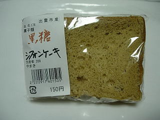

やまきの黒糖シフォンケーキ
2009/10/25
雲州ひらた大物産展の中ノ島会場で販売していたシフォンケーキです。
多伎いちじく館で販売していたのと同じものな気がします。大社のJAの朝市でも買ったような気がします。

ラップを外したら黒糖の香りが強くしました。甘くてふわふわのシフォンケーキですね。
150円でこの味はいいですね。また何処かで見つけたら買おうと思いました。
製造者は出雲市知井宮町の山下さんです。生産者が「やまき」と表示してありました。
島根県出雲市知井宮町
2009/10/25
雲州ひらた大物産展の中ノ島会場で販売していたシフォンケーキです。
多伎いちじく館で販売していたのと同じものな気がします。大社のJAの朝市でも買ったような気がします。

ラップを外したら黒糖の香りが強くしました。甘くてふわふわのシフォンケーキですね。
150円でこの味はいいですね。また何処かで見つけたら買おうと思いました。
製造者は出雲市知井宮町の山下さんです。生産者が「やまき」と表示してありました。